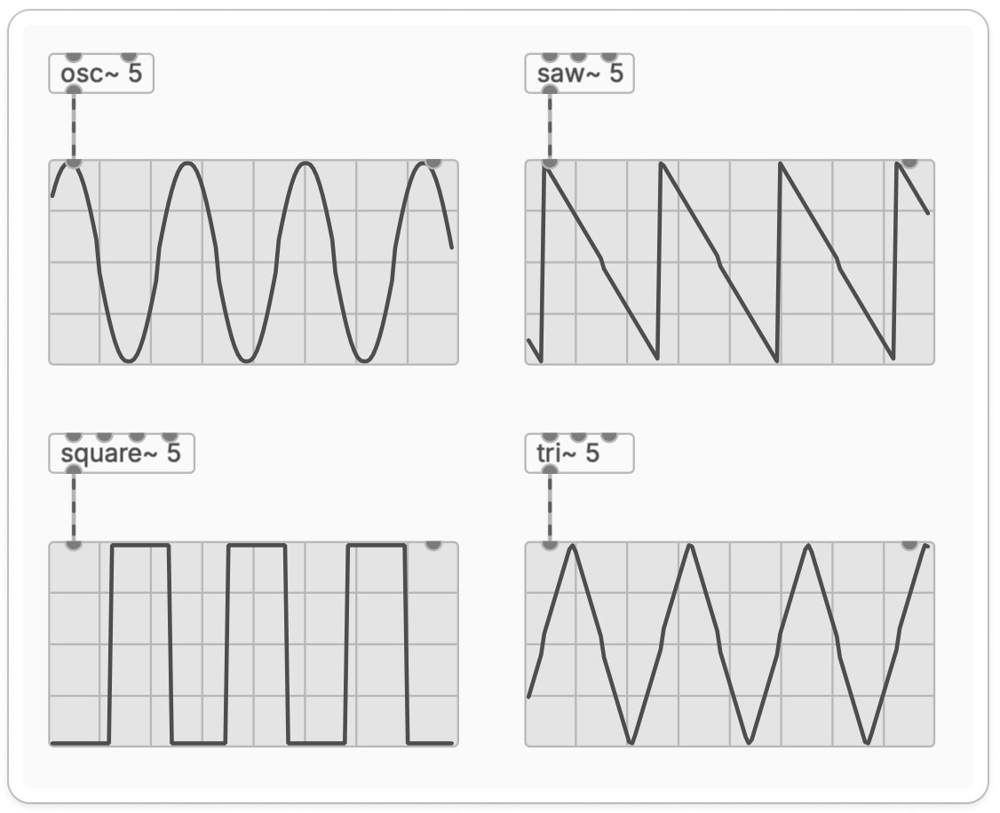
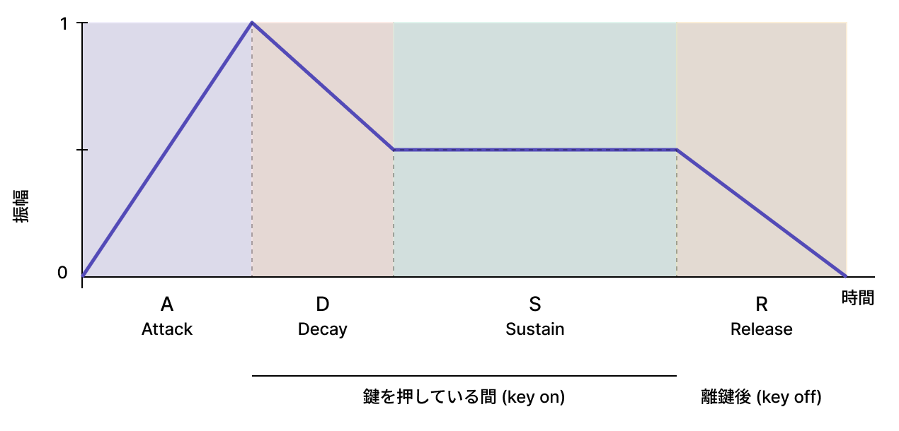
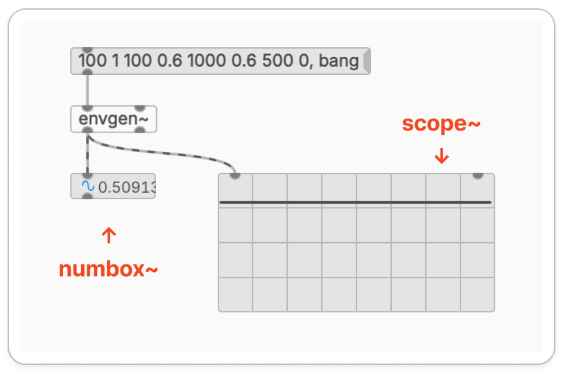
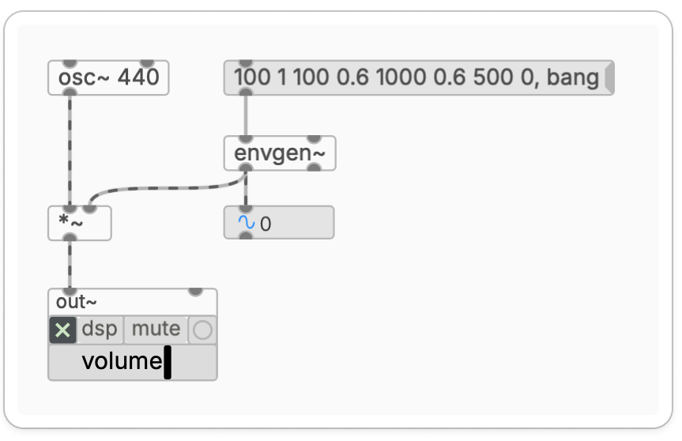
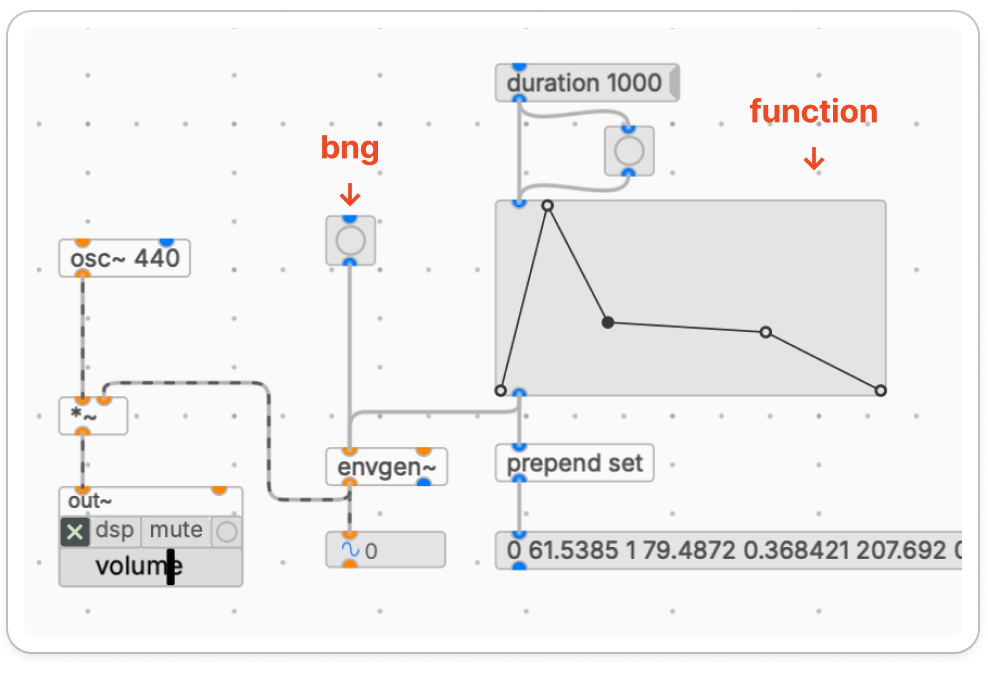
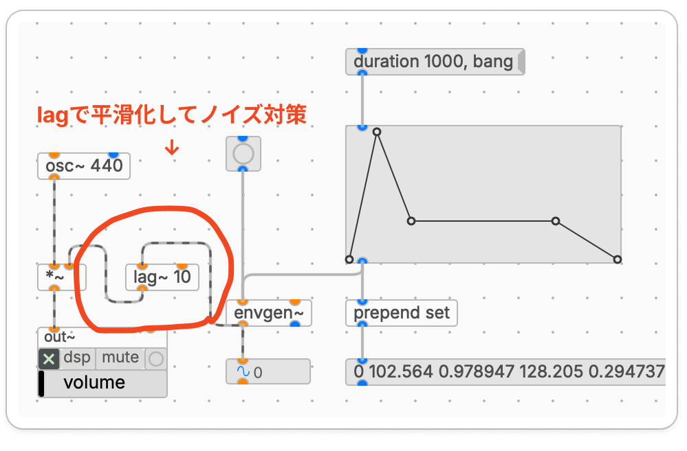
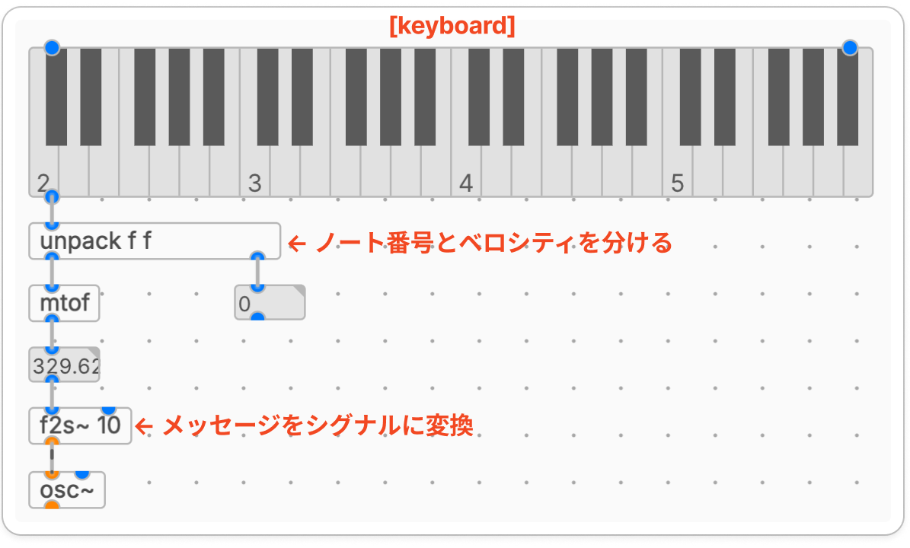
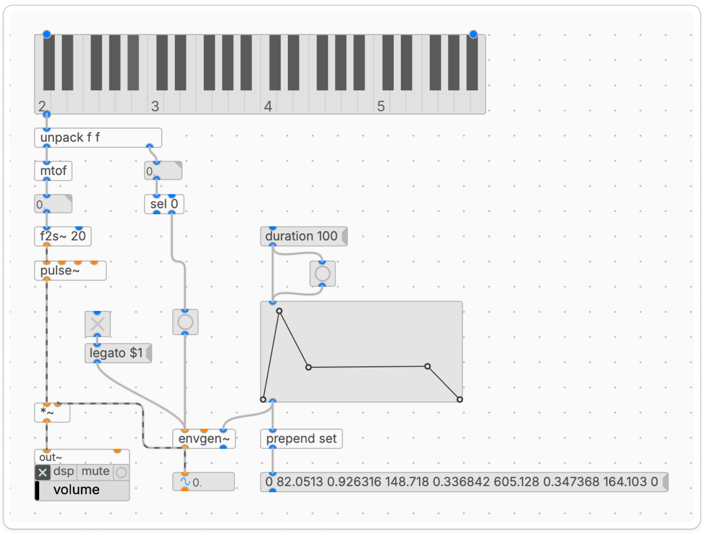

滋賀大学 自主ゼミ「サウンドプログラミング入門」 2026年度 春学期
サンプルのダウンロード方法
Mac：
Option (Alt)キーを押しながら上のリンクをクリックする
Windows： リンクを右クリックして「名前を付けてリンク先を保存」
または、クリックして表示されたテキスト（文字列）をすべてコピーし、テキストエディタに貼り付けて、ファイル名を
2_envelope_fig.pd（拡張子を.pd）にして保存すれば、Plugdataで開けるようになります。
第1回ではサイン波しか扱えなかったため、音色はあまり選べませんでした。また、DSPをONにすると音がずっと鳴り続けてしまう状態だったので、第2回ではこれらを解決するために以下の3つを扱います。
オシレータと波形 ― 正弦波・鋸歯波・矩形波・三角波・ノイズ
エンベロープ ― ADSR の概念、[envgen~] と [function] による任意形状のエンベロープ
鍵盤による演奏 ― [keyboard] と [mtof] で MIDI ノートから周波数へ変換し、画面上の鍵盤で音を鳴らす
最終的には、画面上の鍵盤をクリックして演奏できるパッチ を完成させます。これができると、シンプルなソフトシンセサイザの原型が作れます。
同じ高さ(周波数)の音でも、波形が異なれば異なる音色 として知覚されます。
波形:時間領域で見た音の形状
倍音構造:周波数領域で見た成分の集合
波形を組み合わせたり加工することによって、特定の倍音構造を持つ音を作ることができます。
サウンドプログラミングで最もよく使われる4つの基本波形を、倍音構造と聴感の特徴で整理します。
| 波形 | 倍音構造 | 音作りの用途・役割 |
|---|---|---|
| 正弦波・サイン波(sine) | 倍音なし(基本周波数のみ、一番シンプルな音) | 時報の「ポーン」や聴力検査の音。混じりけのない、最も丸くて澄んだ音。シンセベース、サブベースなど。 |
| 鋸歯波(saw) | 全倍音 | 主役の音(リード)や、分厚いコード、金管楽器系 などに用いられる。 |
| 矩形波(square) | 奇数倍音のみ | ピコピコした8bitゲーム音、木管楽器系、エッジの効いたシンセベースなど。 |
| 三角波(triangle) | 奇数倍音を少し含む | マイルドなベース音、木琴やフルート などの柔らかいメロディ音などで利用。 |
それぞれの波形に対応するオブジェクトは、サイン波は [osc~]、鋸歯波は [saw~]、矩形波は [square~]、三角波は [tri~] になります。
[scope~] というオブジェクトを使うことで、信号を確認することができます。

図2.2 4つの基本波形(それぞれ5Hzに設定し、scope~で可視化)
[scope~] は、オシロスコープのようにシグナルの時間変化を波形として描画するオブジェクトです。音として聴くだけでは分かりにくい波形の違いを、視覚的に確認することができます。
ここまで紹介したオシレータを 同じ周波数で差し替えてみて、音色の違いを耳で確認しましょう。同じ周波数(例:220Hz)でオシレータを差し替え、音色の違いを聞いてみましょう。
[osc~ 220] / [saw~ 220] / [square~ 220] など↓[*~ 0.5]↓[out~]
ここまで作ったパッチは、DSPをONにすると ずっと同じ音量で鳴り続ける ものでした。しかし、現実の楽器音は次のような 時間的な振幅変化 を持っています。
音の 立ち上がり がある
持続 している間も微妙に変化する
音を止めると 減衰 していく
この振幅の時間変化のパターンを エンベロープ(envelope)と呼びます。エンベロープを与えることで、自然な発音や、楽器らしい表現が得られます。
エンベロープを記述する最も一般的な枠組みが ADSR です。エンベロープを4つのパラメータで表現します。4つのパラメータを調整することで、振幅の時間変化を作ることができます。
| パラメータ | 名称 | 内容 |
|---|---|---|
| A | Attack | 0から最大値までの 立ち上がり時間 |
| D | Decay | 最大値から持続レベルへの 減衰時間 |
| S | Sustain | 鍵を押している間の 持続レベル |
| R | Release | 離鍵後、0までの 減衰時間 |
A / D / R は 時間(ミリ秒)、S は 振幅レベル(0〜1)で指定します。

図3.1 ADSRエンベロープの形状
ADSR はあくまで エンベロープの一例 で、4つのセグメントから構成される標準的な形を表しています。実際の楽器音はこれより複雑な形をしていることも多く、より自由な形状を扱うには、ブレークポイントを任意に設定できる仕組みが必要になります。本回では、その柔軟な実装ができる [envgen~] を中心に扱います。
[envgen~] は、任意の形状のエンベロープ を生成できるオブジェクトです。エンベロープを 「時間と値のペアの並び」 として記述し、各点の間を線形補間して滑らかなエンベロープ信号を出力します。
[envgen~] のメッセージは、次のような書式で記述します。メッセージ・オブジェクトは Cmd/Ctrl + 2 で配置できます。
[100 1 100 0.6 1000 0.6 500 0, bang(
メッセージは 「時間(ms) 値, 時間(ms) 値, ...」 という並びで、最後に , bang を付けてエンベロープの再生をトリガ します。コンマで bang を区切ることで、「形状の定義」と「再生開始」を1つのメッセージにまとめて送ることができます。
| 数値の位置 | 意味 | ADSR との対応 |
|---|---|---|
100 1 | 100ms かけて 1.0 へ | Attack |
100 0.6 | 100ms かけて 0.6 へ | Decay |
1000 0.6 | 1000ms かけて 0.6 へ(同値で水平) | Sustain |
500 0 | 500ms かけて 0 へ | Release |
, bang | エンベロープの再生を開始 | (トリガ) |
このメッセージオブジェクトを [envgen~] の左インレットに繋いだ状態で、ランモード（編集モードを抜けた状態）に切り替えてメッセージをクリックすると、[envgen~] からシグナルとして振幅の変化が出力されます。
なお、[envgen~] から出力される時間変化は、数値として確認するなら [numbox~]、信号の形状（グラフ）として視覚的に確認するなら前述の [scope~] を用います。

図3.3.1 [envgen~]の出力を確認するパッチ
[envgen~] からの出力を、[*~]（シグナル乗算）の右インレットに入力することで、音量をコントロールする「エンベロープ」として利用することができます。
第1回では固定の数値を掛けていた [*~] ですが、右インレットに [envgen~] を繋ぐことで、音量を時間とともに滑らかに変化させることができます。
さきほど作った [envgen~] のパッチに、音源となるオシレータ（[osc~]）と、スピーカーから音を出すためのオーディオ出力（[out~]）を加えて、図3.3.2のようなパッチを組んでみましょう。実際にメッセージをクリックして、単音が綺麗に消えていくのを鳴らして確認します。

図3.3.2 [envgen~]によるエンベロープの基本構成
数値のリスト（時間と値の組み合わせ）で書くのは正確ですが、形状を直感的に試行錯誤したいときは [function] を使います。[function] は、エンベロープの形状を画面上でドラッグして視覚的に編集できるオブジェクトです。
[function] の使い方:
| 操作 | 動作 |
|---|---|
| クリック | 新しいブレークポイントを追加 |
| ドラッグ | 既存のポイントを移動 |
| ポイント選択→ダブルクリック | ポイントを削除 |
[function]を用意して、実際に音を鳴らすパッチ（図3.4）を組んでみましょう。
図3.4のパッチにおいて、[function] の左上のインレットに接続されている [duration 1000( というメッセージは、グラフの横軸全体の長さを何ミリ秒（ms）にするかを設定するものです。図では 1000 に設定されているためグラフの右端がちょうど1000ミリ秒（1秒）となり、グラフで描かれた時間変化が1秒に収まることを意味します。
また、図のようにメッセージの後に丸いボタン（[bng]）を配置しています。メッセージをクリックしただけでは [function] の見た目が変わるだけで、設定が [envgen~] に反映されないためです。このように [bng] を挟んでグラフを叩き直すことで、長さを変えると同時に、最新の形状データを [envgen~] へ即座に上書き・同期させています。
[function] のグラフをマウスで編集すると、その形状データは自動的に [envgen~] に送り込まれて保存されます。そのため、[envgen~] の左インレットに接続されている[bng]をクリックした瞬間に、そのエンベロープの再生がスタートして音が鳴る仕組みになっています。
また、[function] の下部から [prepend set] というオブジェクトを経由して、右下のメッセージボックス（Cmd/Ctrl + 2 で配置）へと線が伸びています。[prepend set] は、受け取ったデータを後ろのメッセージボックスの中身としてリアルタイムに上書きする役割を持っています。
これにより、グラフで描いた形状が、さきほど3.3で学んだ「時間と値の数値リスト」に自動変換されてメッセージボックス内に表示されます。画面上で直感的に描いた点が、内部ではきちんと数値の並びとして処理されていることが目視で確認できるだけでなく、このメッセージボックスに書き込まれた数値をコピーすれば、そのまま別のプリセット（音色呼び出しボタン）として再利用することも可能になります。

図3.4 [function]で形状を編集し、[envgen~]で再生する
[envgen~] を連続して再トリガしたり、短いノートを繰り返し送ったりすると、「プチッ」というクリックノイズが発生することがあります。これは、エンベロープが再トリガされた瞬間に出力値が 不連続にジャンプ することが原因です。
これを防ぐには、エンベロープ出力と [*~] の間に [lag~] を挟みます。
[envgen~]↓[lag~ 10] ← 10ms の時定数で平滑化↓[*~]
[lag~] は ローパスフィルタ で、急激な値の変化を指数的にゆるやかにします。引数は時定数(ミリ秒)で、値が大きいほどクリックは抑えられますが、その分エンベロープの応答も鈍くなります。10ms 程度 が、クリックを抑えつつ Attack の鋭さを保てる目安です。

図3.5 [lag~]によるクリックノイズの抑制
ここまでで「[bng] を押すと単発音が鳴る」段階まで来ました。次に、鍵盤のGUIをクリックして演奏する 機能を追加します。
コンピュータや電子楽器を使った音楽では、鍵盤に対応した値として MIDIノート番号 という整数が用いられます。中央のド(C4)が 60番、その上のレ(D4)が62番、ラ(A4 = 440Hz)が 69番 です。1上がるごとに半音上がります。
このノート番号を、オシレータが受け付ける 周波数(Hz) に変換するには、[mtof](MIDI to frequency)というオブジェクトを使います。
[69] ← MIDIノート番号↓[mtof]↓[440] ← 周波数(Hz)に変換される
画面上にクリックで演奏できる鍵盤UIを表示する [keyboard] オブジェクトがあります。鍵盤をクリックすると、そのキーに対応する MIDIノート番号と、鍵盤を押した強さや離鍵を表すベロシティ（velocity）の情報が出力されます。
[keyboard] のアウトレットからは、これら2つの情報がセットになった「リスト」という形式でデータが出力されます。そのため、図4.2のように、まずは [unpack] オブジェクトを使ってノート番号とベロシティの2つの数値に分解します。
オブジェクトに [unpack f f] と記述することで、受け取ったリストを2つのアウトレットからそれぞれ数値（float：浮動小数点数）として出力できます。この場合、左アウトレットからはノート番号が、右アウトレットからはベロシティがそれぞれ出力されます。
分解されたノート番号は [mtof] に送られ、即座に対応する周波数（Hz）へと変換されます。変換された周波数の数値データは、そのまま [osc~] に繋ぐのではなく、第1回で説明した [f2s~] オブジェクトを経由させます。

図4.2 [keyboard]と[mtof]を使った演奏パッチ
[f2s~]は引数なしでも動作しますが、図のように[f2s~ 10]と引数（ミリ秒）を指定することで、変化を滑らかにできます。この数値を（例えば200や500などに）あえて大きくすると、ある音高から次の音高へ「ウィーン」と滑らかにピッチが移動するようになります。これはコンピュータ音楽やシンセサイザーの用語でポルタメント（またはグライド）と呼ばれる効果です。
ここまでの内容を統合して、画面上の鍵盤をクリックすると音が鳴るパッチ（図4.3）を完成させます。
前節で解説した通り、[unpack f f] の右アウトレットからは、鍵盤を押した時にベロシティ値（1〜127）、鍵盤を離した時（離鍵時）に 0 が出力されます。この特性を利用して、「鍵盤が押された瞬間（0以外の値が来たとき）だけエンベロープを起動するトリガー」を作ります。
そのために使用するのが [sel 0]（select） オブジェクトです。[sel] は引数に指定した値（ここでは 0）が入力されると左アウトレットから bang を出力し、それ以外の値（ここでは 1〜127）が入力された場合は、その数値をそのまま右アウトレットから出力する特性を持っています。
図4.3のパッチでは、[sel 0] の右アウトレット（0以外のオンの状態）から出力されたベロシティ値を、丸いバン・ボタン（[bng]）に入力しています。数値が [bng] に入ることで、鍵盤を押した瞬間にだけ bang 信号へと変換され、[envgen~] のエンベロープ再生をスタートさせる仕組みです。なお、左アウトレット（0のオフの状態）には何も接続していないため、鍵盤を離したときには音量は変化せず、エンベロープは最後まで演奏され続けます。
[keyboard]/ \/ \(MIDIノート) (velocity)↓ ↓[mtof] [sel 0] ← 0以外なら左、0なら右に分岐↓ / \[osc~] (オフ) (オン)↓ ↓ ↓| （不接続） [bng]| ↓ ↓| [envgen~]↓ ↓
ここまでの内容を統合して、鍵盤をクリックすると音が鳴るパッチ を作ります。

図4.3 第2回の完成パッチ(鍵盤+エンベロープ)
波形の種類と倍音構造、音色との関係
[osc~] / [saw~] / [square~] / [tri~] の使い分け
エンベロープの必要性と ADSR の概念
[envgen~] による任意形状のエンベロープの生成
[function] を使ったグラフィカルなエンベロープ編集
[lag~] によるクリックノイズの抑制
MIDIノート番号と周波数の関係、[mtof] による変換
[keyboard] による画面鍵盤での演奏